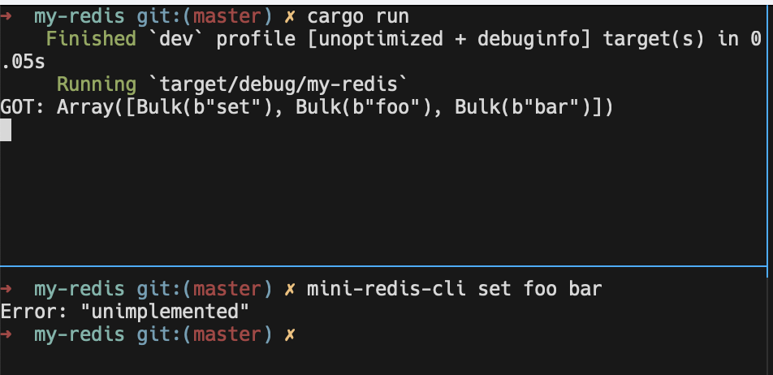

Spawning
앞선 튜토리얼은 이를테면 client side의 프로그램을 만들어 보는 과정이었습니다. 여기서는 server를 만드는 과정을 살펴봅니다.
Accepting Sockets
Server를 만드는 가장 첫 단계는 inbound TCP socket을 accept하도록 코드를 짜는 것입니다. 이는 tokio::net::TcpListener를 6379번 포트로 binding하여 구현할 수 있습니다. 코드로 완성해보면 아래와 같습니다.
use tokio::net::{TcpListener, TcpStream};
use mini_redis::{Connection, Frame};
#[tokio::main]
async fn main() {
// Bind the listener to the address
let listener = TcpListener::bind("127.0.0.1:6379").await.unwrap();
loop {
// The second item contains the IP and port of the new connection.
let (socket, _) = listener.accept().await.unwrap();
process(socket).await;
}
}
async fn process(socket: TcpStream) {
// The `Connection` lets us read/write redis **frames** instead of
// byte streams. The `Connection` type is defined by mini-redis.
let mut connection = Connection::new(socket);
if let Some(frame) = connection.read_frame().await.unwrap() {
println!("GOT: {:?}", frame);
// Respond with an error
let response = Frame::Error("unimplemented".to_string());
connection.write_frame(&response).await.unwrap();
}
}이를 실행해보면 아래와 같습니다.

Concurrency
위 코드의 loop { ... }를 보면 바로 알겠지만, 지금은 하나의 요청을 처리해야 다음 요청을 처리할 수 있습니다.
만약, 요청 처리 과정이 복잡하거나 시간이 오래 걸린다면 blocking 돼버리는 상황을 생각할 수도 있습니다.
따라서, 많은 요청을 동시에(concurrently) 처리할 수 있도록 코드를 수정할 필요가 있습니다.
[!Note] Concurrency와 Parallelism은 서로 같은 것이 아닙니다.
예를 들어, 두 작업 , 을 번갈아가며 수행하면 concurrent한 것이지 parallel한 것은 아닙니다. parallel하려면 작업 ,를 수행하는 각각의 일꾼 , 가 있어야 합니다.
Tokio를 사용할 때의 장점은 parallel을 걱정할 필요 없이, 심지어 single thread에서도 concurrent한 프로그래밍을 할 수 있다는 점입니다.
Concurrency를 위해 새로운 Task를 spawn하여 각각의 inbound request를 처리하도록 코드를 수정합니다.
use tokio::net::TcpListener;
#[tokio::main]
async fn main() {
let listener = TcpListener::bind("127.0.0.1:6379").await.unwrap();
loop {
let (socket, _) = listener.accept().await.unwrap();
// A new task is spawned for each inbound socket. The socket is
// moved to the new task and processed there.
tokio::spawn(async move {
process(socket).await;
});
}
}
Tasks
Tokio의 Task는 asynchronous한 green thread입니다.